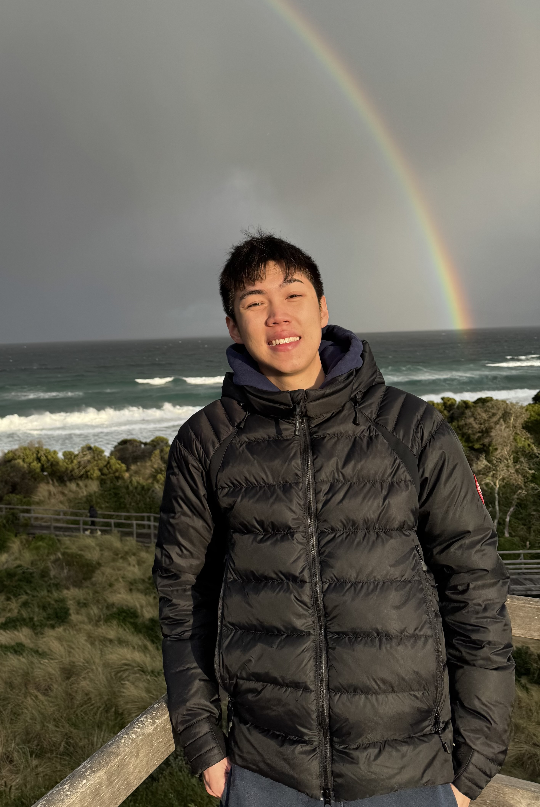
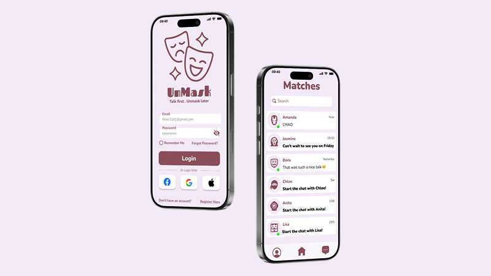
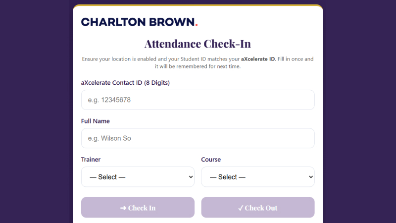
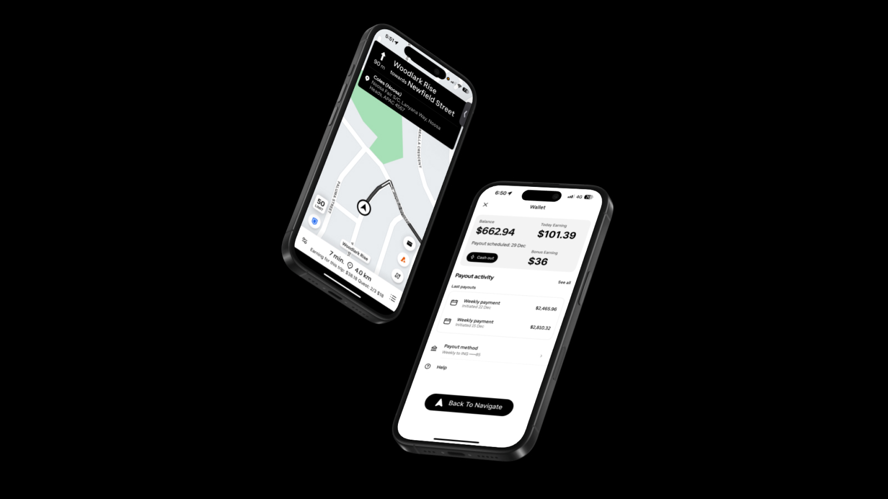
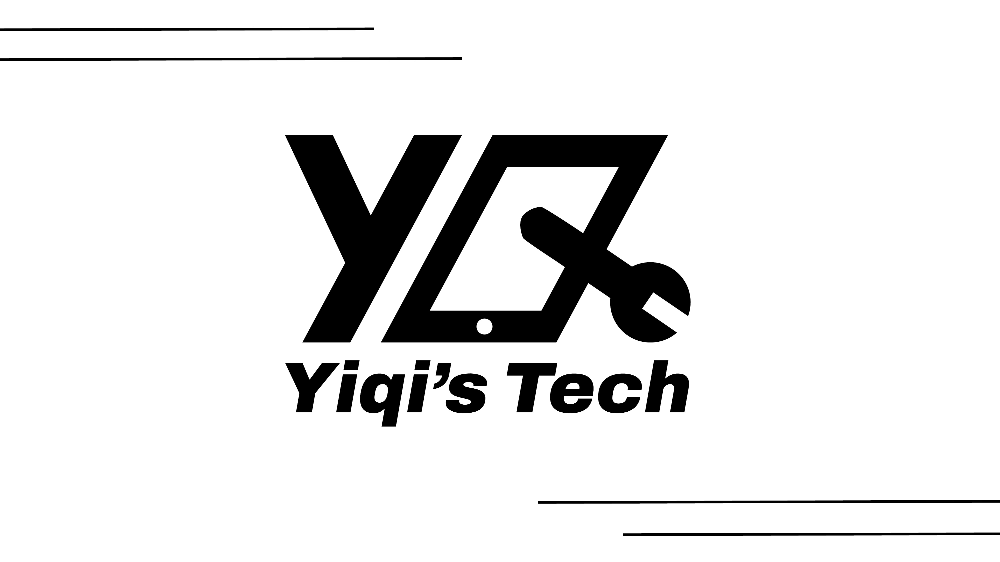

Clarity First
If users hesitate, the design has failed. I simplify before I beautify.
I design digital products that are simple, clear, seamless — turning messy problems into experiences that just work.
Explore My Work →

Reducing friction in the online booking experience for International Badminton Centre.
Read case study →
Designing staged identity reveal to build trust in digital dating.
Read case study →
Designed and implemented a digital attendance system integrating SharePoint and automation workflows.
Read case study →
Improving earning clarity and wallet interaction to support driver decision-making.
Read case study →
Rebranding a phone repair business from dated serif lettering to a bold geometric identity — a custom YQ monogram with an integrated phone-and-spanner mark.
Read case study →Hey, I'm Wilson — a Brisbane-based UX designer focused on clear, structured, and practical digital experiences.
I'm drawn to complex problems — messy workflows, unclear interfaces, and systems that don't quite work as they should. I enjoy breaking them down into simple, usable solutions that make sense in real life.
My background includes digital product concepts and operational tools, where I've learned that good design isn't about looking clever — it's about reducing friction and making complexity manageable.
Outside of design, you'll find me on the basketball court. I like the discipline, teamwork, and constant improvement — the same mindset I bring into my work.
If users hesitate, the design has failed. I simplify before I beautify.
Good ideas only matter if they work under real constraints. I design for execution, not just imagination.
Clear structure leads to better decisions. I design with logic to support strong visual outcomes.
Open to new projects, collaborations, and conversations.